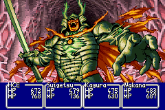
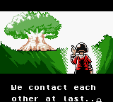
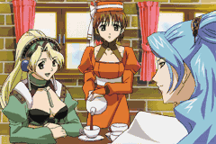

User:Sherkel
[hr]
| The Humptyhillhead That Sends an Unquiring One Well to the West |
[hr]
Hello! I've been a part of GCL's community since 2007 and was made staff on the wiki when it first opened up. I was absent for many of the years since and thus may not know every glitch technique under the sun, though I have caught up wherever I can since I returned. I'm interested primarily in speedrunning glitches (mainly those of Generation I, though not necessarily even limited to Pokémon!) and RNG mechanics (Generation III's in particular). However, I'm more focused on overseeing the site at present.
My forum profile is here if you'd like to contact me in a more direct way than the talk page. Feel free to voice whatever concerns you have or ask if you may have known me by another name.
Contents
Notes
A to-do list, including stuff I'm meaning to add articles for and/or look for further information on.
Primary
- Properly document whatever I can of Generation III, IV, and V RNG in terms of technical elements (User:Sherkel/RNG Notes)
- Fill up the Sherkel-GCL Pastebin
- Revise and survey for uniform use of templates, making them collapsible and compact whenever suitable (User:Sherkel/Template:Major glitches 2)
Other
- Earliest non-SRAM ACE in Yellow (maybe already known): https://www.speedrun.com/pkmnyellow/guide/o5q3p
- What are other important differences between the emulator in Box and a real GBA, if any? (Not likely to find this out myself)
Links and sources
Pastebin
I've been going through the Pastebin accounts of accomplished glitchers lately and copying whatever might be relevant to the aims of this site to https://pastebin.com/u/Sherkel-GCL. However, I'm not done, and even when I say I am, I may have missed some things, and the PSR programming community never stops chugging along. While some mainly focus on routing, they all play an important part. Some major contributors and their Pastebins are:
Entrpntr: https://pastebin.com/u/entrpntr
Luckytyphlosion: https://pastebin.com/u/Luckytyphlosion
Stringflow: https://pastebin.com/u/stringflow
Krazyd4n: https://pastebin.com/u/krazyd4n
Gifvex: https://pastebin.com/u/gifvex
Additional important pages
FireRed/LeafGreen starter manipulation tutorial (has info on initial seeding): https://docs.google.com/document/d/1Qqsx95w6wXf0idhWBZ0M-TxOjbUbN0UFckEagfGQEsc/
Gunner on manips in Gen 2: https://www.youtube.com/watch?v=tEdqe-7Mcao
RNG articles for Colosseum/XD and Gens 6/7...where did you go?!
[hr]
|  |  |  |